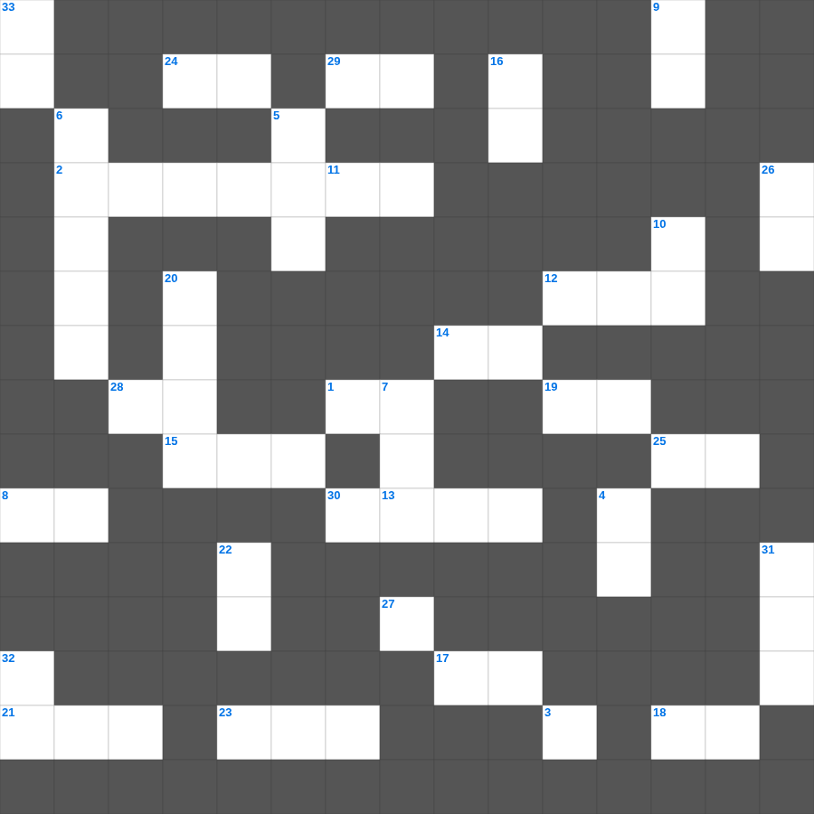

아가 마스터 100 (2/2)
📌 서비스 정의
십자가로세로는 교회 주보와 주일학교에서 사용할 수 있는 성경 기반 가로세로 퍼즐 서비스입니다. 성경 인물, 사건, 핵심 구절을 바탕으로 제작되었습니다. 온라인 풀이 및 인쇄 기능을 제공합니다.
📖 아가란?
아가는 솔로몬과 술람미 여인의 사랑 노래로, 남녀 간의 아름다운 사랑을 시적으로 묘사하며 전통적으로 하나님과 그 백성, 그리스도와 교회의 사랑을 상징하기도 합니다.
📚 아가의 주요 사건·주제
신랑과 신부의 첫 만남과 사랑의 노래 · 사랑의 그리움과 찾음 · 결혼의 기쁨 · 사랑의 견고함에 대한 찬미 · 사랑의 영원함에 대한 선언
무료로 즐기는 아가 아가 성경 퀴즈 문제! 35개의 힌트로 구성된 가로세로 낱말 퍼즐입니다. PC와 모바일 모두 지원되며, 정답을 바로 확인할 수 있어 혼자서도 쉽게 풀 수 있습니다.

📝 가로 힌트
1. 서른째 해 넷째 달 초닷새에 내가 이것 강 가 사로잡힌 자 중에 있을 때에
2. 여로보암이 이스라엘을 떠나게 한 사람들
3. 나에게 이르시기를 내 은혜가 네게 족하도다 이는 내 능력이 이것한 데서 온전하여짐이라 하신지라
8. 그리스도께서 약하심으로 십자가에 못 박히셨으나 하나님의 이것으로 살아 계시니
12. 사드락, 메삭, 아벳느고의 신앙
13. 너는 가서 기쁨으로 네 이것을 먹고 즐거운 마음으로 네 포도주를 마실지어다
14. 누가 지혜가 있어 이런 일을 깨달으며 누가 이것이 있어 이런 일을 알겠느냐
15. 예수 그리스도를 죽은 자 가운데서 부활하게 하심으로 말미암아 우리를 거듭나게 하사 이것이 있게 하시며
17. 나답과 아비후가 다른 불을 드리다 죽은 일
18. 그리스도의 이것이 너희 마음을 주장하게 하라 너희는 이것을 위하여 한 몸으로 부르심을 받았나니
19. 너희가 그리스도의 이름으로 이것을 당하면 복 있는 자로다 영광의 영 곧 하나님의 영이 너희 위에 계심이라
21. 이것은 우리와 성정이 같은 사람이로되 그가 비가 오지 않기를 간절히 기도한즉 삼 년 육 개월 동안 땅에 비가 오지 아니하고
22. 철 침대를 가졌던 거인족 바산 왕
23. 강물은 다 바다로 흐르되 바다를 이것하지 못하며
24. 에돔 땅을 돌아가려 하니 백성의 마음이 이것함
25. 인자야 내가 너를 이스라엘 자손 곧 패역한 백성, 나를 이것 하는 자에게 보내노라
27. 베드로전서 3장 9절: 악을 악으로 갚지 말고 도리어 이것을 빌라
28. 예수님이 다시 오시는 일
29. 여호와께 피하는 것이 이것을 신뢰하는 것보다 나으며
30. 사람의 행위가 자기 보기에는 모두 정직하여도 여호와는 이것을 감찰하시느니라
📝 세로 힌트
2. 자기 집과 마주 대한 부분을 중수한 사람들
4. 하나님이 예레미야에게 토기장이의 집으로 가라고 하신 목적
5. 미가 선지자의 고향
6. 빛 가운데 있다 하면서 그 이것을 미워하는 자는 지금까지 어둠에 있는 자요
7. 욥이 하나님께 호소한 자신의 의로움 '나의 이것이 나를 증거하리라'
9. 우리는 너희 가운데서 유순한 자가 되어 유모가 자기 자녀를 이것함과 같이 하였으니
10. 잃은 드라크마 비유: 어떤 여자가 열 드라크마가 있는데 하나를 잃으면 이것을 켜고
11. 이것의 것을 생각하고 땅의 것을 생각하지 말라
16. 이스라엘이 가나안을 얻은 것은 그들의 이것 때문이 아님
20. 모세가 죽기 전 올라가 가나안을 바라본 산
22. 한 여자가 매우 귀한 향유 곧 순전한 나드 한 이것을 가져와 예수의 머리에 부음
26. 그리스도께서 다시 살아나지 못하셨으면 우리가 전파하는 것도 이것이요 또 너희 믿음도 이것이라
31. 노아의 방주에서 물로 말미암아 구원을 얻은 자는 몇 명인가
32. 야곱의 사다리 환상 장소
33. 너희 마음에 그리스도를 주로 삼아 거룩하게 하고 너희 속에 있는 소망에 관한 이유를 묻는 자에게는 대답할 것을 항상 준비하되 이것과 두려움으로 하고
🧩 이 퍼즐에서 배우는 내용
이 퍼즐은 아가 마스터 100 (2/2)의 핵심 단어와 개념을 자연스럽게 복습할 수 있도록 구성되었습니다. 주일학교 수업이나 개인 성경공부에서 학습 내용을 점검하는 용도로 바로 활용할 수 있습니다.
🧑🏫 교회 교육 자료 활용
이 퍼즐은 주일학교 교재 추천 자료로 활용할 수 있고, 주일학교 주보에 넣기 좋은 분량으로 구성되어 있습니다. 수업용 주일학교 교안에 활동지로 붙이거나, 예배 후 복습용 주일학교 공과교재로 바로 사용할 수 있습니다.
🏷️ 키워드
아가 성경 퀴즈 문제, 아가, 십자가로세로, 성경퀴즈, 말씀퀴즈, 가로세로퍼즐, 주일학교 교재 추천, 주일학교 주보, 주일학교 교안, 주일학교 공과교재